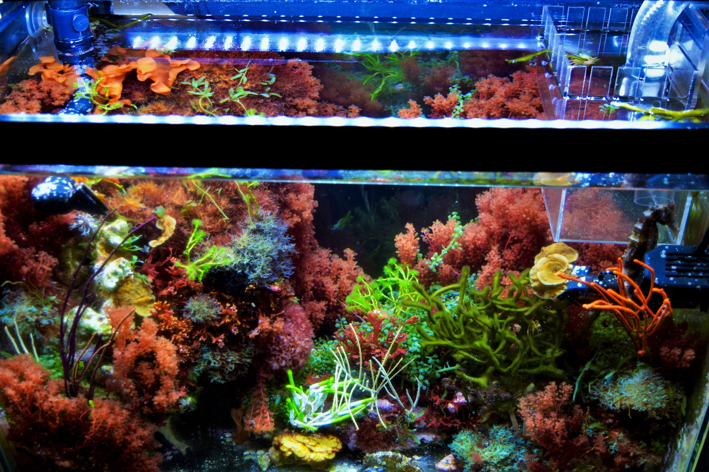
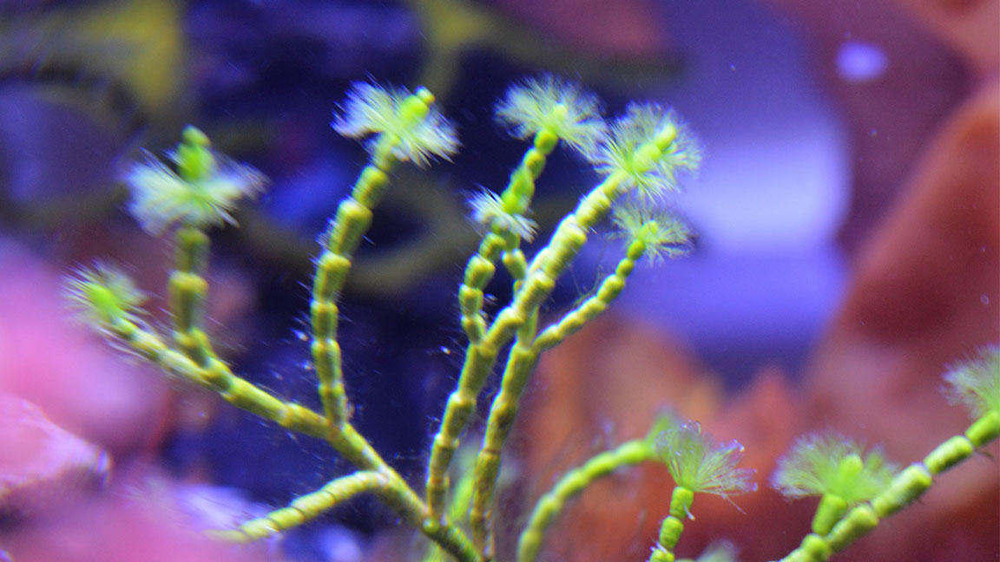
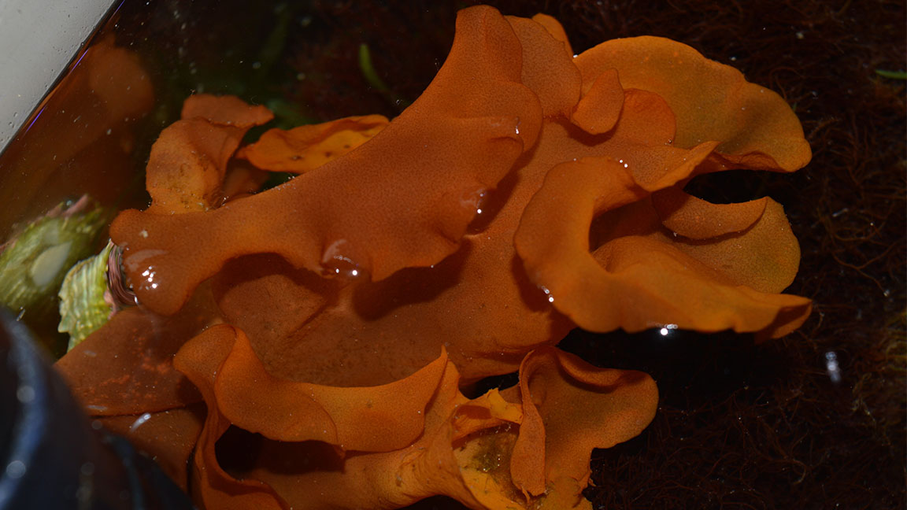
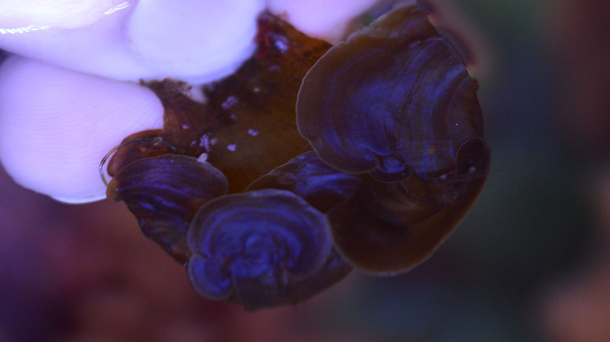

Interested in MACROS?
Read our macroalgae tips below!

Macroalgae is a welcome addition to any seahorse tank! Not only do macros help with nutrient removal, but many species bring a lot of color and beauty to the
aquarium! We are working on articles to help you navigate the world of macroalgae. In the meantime, check out our quick tips below that will help you to decide between
green, red or brown species, and provides care tips for each! Then check out our
MACROALGAE VIDEOS ON YOUTUBE
to learn more!

Green Macroalgae
- Most are typically simple species that grow quickly, which means they remove more nutrients
- People like to keep green macroalgae in a sump, for the specific purpose of nutrient removal. But, so many species can make a display tank more beautiful
- The key to keeping green macros in a display is to pay attention, harvest the green species more than slower growing macros and be careful not to let them overgrow any other macros
- Kept in the sump, species like cheatomorpha, Caulerpa and any tuft algae on a scrubber in the sump is the answer to any excess nutrient problem
- Simple, green species grow well in most lighting conditions, preferring more red spectrum. In any lighting, they will outcompete other algae

Red Macroalgae
- They truly brighten up a tank! Many species are very efficient at nutrient removal!
- Most species in the red category have a medium growth rate, which means they can be kept in the display tank or sump! They look beautiful in both situations
- The key to keeping red macros in a display is to pay attention, ensure that no other species grows faster (taking up all of the nutrients) and to harvest in order to promote growth. They thrive with proper care
- Red species of macros prefer higher lighting conditions that include more blue spectrum. They help with nutrient removal and are beautiful in either a sump or display
- Red species grow well in most lighting conditions, but they excell in more blue light. If your red macros are turning white, turn up the light

Brown Macroalgae
- Most secies don't actually look brown! Most aquarium sp like blue scroll and ochtodes appear blue!
- Blue scroll is the species in the brown macro category that removes the most nutrients. But all brown macros bring so much color and definition to any aquarium
- The key to keeping brown macros in a display is to pay attention, limit the number of green species within the tank,as they will grow much faster. Due to slower growth, you won't need to trim or harvest as often
- Brown species prefer higher lighting conditions that include more blue spectrum. They are not typically kept in the sump and many species cannot survive an aquarium
- Brown species of macros prefer higher lighting conditions that include more blue spectrum. Many species are blue in color.